As histórias da Psicologia do Esporte, da Associação Brasileira de Psicologia do Esporte e da Prof. Dra. Katia Rubio se confundem. Sendo assim, o primeiro capítulo da série Memórias é, obrigatoriamente, um relato sobre Katia Rubio.
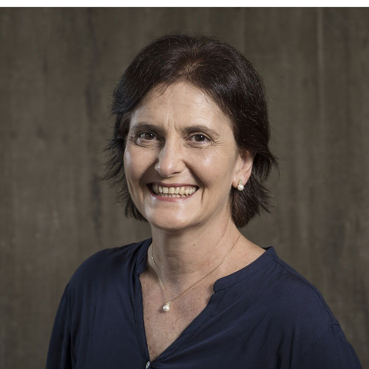
Sua primeira graduação foi em jornalismo. Trabalhou durante oito anos com informação e publicidade e, em 1991, iniciou um novo curso: Psicologia na PUC de São Paulo. Em 1998, veio o Mestrado em Educação Física na EEFE-USP. E durante o período do curso, atuou como docente da faculdade.
“As atividades de pesquisa desde a graduação contribuíram para minha carreira como docente que me levou à Universidade de São Paulo no ano de 1997”, diz a Professora.
A Carreira Acadêmica
Atualmente é professora associada da Faculdade de Educação da Universidade de São Paulo. Orientadora de mestrado e doutorado nos programas de Pós-graduação da EEFE-USP e FE-USP. Atua como pesquisadora do Instituto de Estudos Avançados da USP e coordena o Grupo de Estudos Olímpicos
O Grupo trabalha com questões relacionadas ao Olimpismo e ao esporte e como mobiliza, na atualidade, “a sociedade e a comunidade acadêmica tanto para entender e justificar o movimento desse fenômeno, como para buscar subsídios para empreendimentos como a candidatura como cidade sede de Jogos PanAmericanos ou Olímpicos”.
Linhas de Pesquisa
- Dor e atividade física/esportiva
- Gênero, movimento olímpico e corporeidade
- Olimpismo, imaginário esportivo e cultura
- Psicologia social do esporte e estudos socioculturais do movimento humano
O doutorado foi realizado na FE-USP, em 2001, e o Pós Doutorado em 2004, em Psicologia Social, na Universidade Autônoma de Barcelona. A defesa da livre docência foi em 2005 na EEFE-USP.
Publicações
São 32 livros publicados tanto como organizadora e/ou como autora na área de Psicologia do Esporte e Estudos Olímpicos.
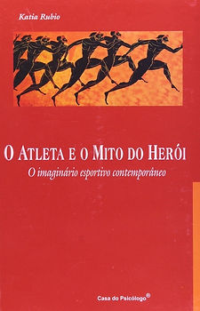
“Durante o processo do mestrado realizei uma de minhas melhores obras que resultou no livro O atleta e o mito do herói (Ed. Casa do Psicólogo).”
A representação da derrota no esporte contemporâneo foi o tema do pós-doutorado e suas obras são referências para todos os estudiosos da área.
É membro da Academia Olímpica Brasileira e em junho de 2010 recebeu a Medalha do Mérito Desportivo.
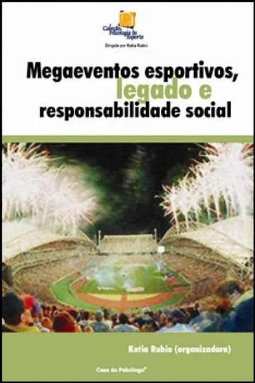
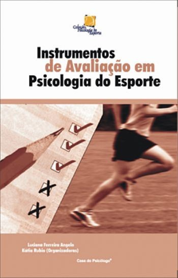
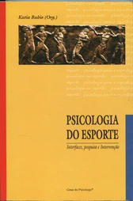
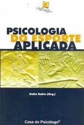
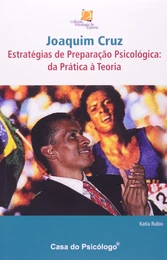
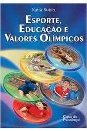
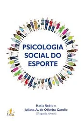
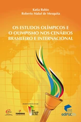
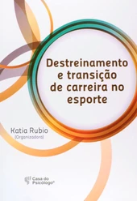
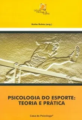
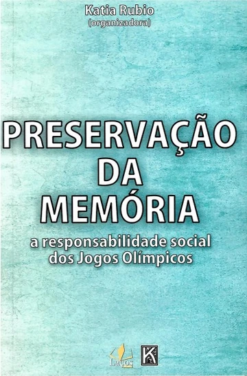
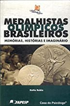
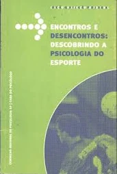
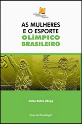
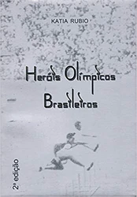
Foi editora da Revista Brasileira de Psicologia do Esporte desde sua fundação até 2013. Atualmente edita a Revista de Estudos Olímpicos Olimpianos já em seu 4° ano de existência.